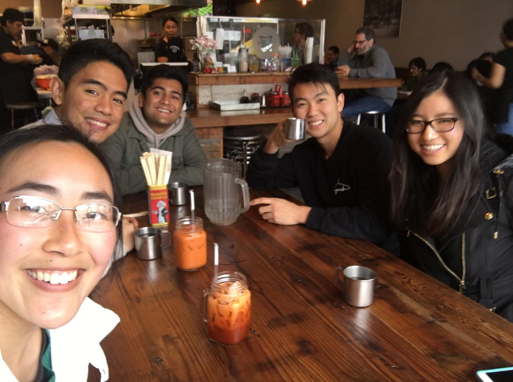

SkyAlert
Date
January - May 2017
Position
Design Consultant
Background
SkyAlert is a startup currently based in Mexico and Berkeley, that provides comprehensive natural disaster alerts through their app, as well as early earthquake alerts. In the Spring '18 semester through Berkeley Innovation, I worked with David Olivar, Bhushan Balagar, and Monica Tang with SkyAlert to develop an onboarding process for their app. Our team was mentored by Angela Huang.
Challenge
Create an interactive onboarding process that could increase usability throughout the app while educating the user on earthquake technicalities.
Skills
- User Experience Research
- Interface Design
- User Testing
1. User Research


Learning about our user group
To design an onboarding experience, we first needed to understand how SkyAlert users percieved the app, and learn about their understanding of natural distaster data.
Through SkyAlert’s twitter, we surveyed over 5000 users of the app to learn about their experience using the app, and their user flows. Our contextual inquiries were done with primarily Spanish-speaking college students, allowing us to observe how a user navigated the onboarding process. Because all of our participants in the contextual inquiry had never used SkyAlert before, we focused this portion of our research in understanding how new users figured out the app but also gleamed some information specifically on their response to onboarding.
Onboarding Goals
- Clarify subscription options and make them discoverable within app.
- Educate users on the difference between magnitude and intensity.
- Educate users on the other functionality of the app (i.e Volcano alerts, weather, etc).
- Allow users to retain control of the pace and learn interactively during onboarding.
2. Ideation / Low-Fi Prototype

Channeling Insights to Ideation
To initialize the app, we wanted to convey the benefits of the app right when users initially opened the app. This would allow us to introduce SkyAlert’s distinguishing benefits from their competitors. From there, we began making mockups of an interactive onboarding processes where users could interact with the app while the onboarding occurred. We chose to focus primarily on educating the user about the data that was being presented to them, particularly differentiating two types of data that were often confused together: magnitude and intensity.
As we progressed further into our onboarding ideation, we realized that some features on the app showed very obvious design flaws, which we attributed to some of the problems that our client initially expressed. Thus, we took it upon ourselves to redesign the purchase plans page. With these pages, we wished to reestablish design consistency with the rest of the app and make it easier for users to compare and contrast certain purchase plans.
3. Mid Fidelity Prototyping and User Testing
Rapid ideation and testing
From our low-fidelity sketches and initial wireframes, we created a mid-fidelity clickable prototype on Figma and then user tested on UserTesting.com. We conducted 9 user tests, ages spanning from 18 to 60.
User Feedback
- Users generally enjoyed the simplistic illustrations and concise descriptions of benefits.
- The features on our new payment plan page were too convoluted. We needed to narrow down.
- During the Feed Walkthrough, users had trouble following the boxes as they tended to move around the screen.
- A large challenge that became apparent was in our method to explain 'intensity' of earthquakes to users. Though we had developed a page to educate users of intensity, we struggled to integrate it into our current onboarding process.
4.
Refinement and High-Fidelity Screens
Refinement
From the user test feedback we received, we refined the screens from our mid-fi screens and finalized our onboarding process.

To simplify the user experience when purchasing payment plans, we condensed 8 features into 6 features, relying on our drop down menus to explain the delineations of the features.
To solve the intensity challenge that arose during user testing,
we decided to revamp the past notifications page. At the time,
the notifications page listed information in a similar format like the feed.
However, the feed featured an expand option, where one could open a card
to view a map containing details about the earthquake.
We decided to implement a feature similar to this to showcase intensity,
allowing our users to learning about intensity interactively, whilst
retaining consistency.

High Fidelity Screens
Here are a couple of high fidelity screens created throughout the onboarding process.


5.
Reflections and Lessons Learned
Reflection
After reflecting on our final deliverable, we considered potential future directions for this project and thought about aspects of our project that could be improved if we had more time.
- Because the feed and notifications page were convoluted in their functions, it was easy to see how users could get confused by the two, or dismiss one for the other. If I had more time, I would redesign both the feed and notifications page to merge certain functions, and clearly distinguish the two functionalities.
- SkyAlert's app attempted the ambitious goal of creating an overly comprehensive natural disaster app. There are tsunami alerts, volcano live feeds, local weather alerts, and even insurance plans (in case your house is hit by disaster). I would be interested in creating a way to clearly partition these functionalities into separate parts of the app, instead of, for example, jamming all the disaster news into one 'feed'.
As this was the first mobile design project I have ever worked on, I learned a ton about design principles and the HCD process. I really saw the value of building insights from the users, which helped my team and I drill down to the core problems we chose to tackle in our onboarding. In the future, I want to learn more about visual design principles and continue practicing the HCD process.
